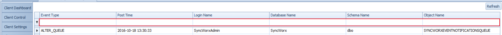

Client Auditing
The Client Auditing screen main purpose is to show all the DDL Events that are happening on the selected client, and you are able to filter down based on the provided columns and on what you want to see. See below screen.

For more information concerning Auditing - See the Auditing section.
Note
List of audit events can be found in the Audit Events section